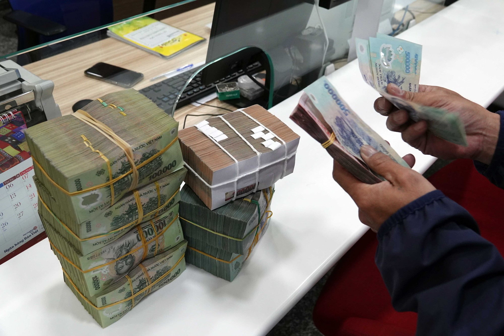

Doanh nghiệp tại TP.HCM nợ thuế tăng mạnh
Thứ sáu, 11/08/2023, 09:18 (GMT+7)
Cục Thuế TP.HCM cho biết, tổng số tiền nợ thuế tính đến cuối tháng 6 trên địa bàn hơn 53.000 tỉ đồng, tăng 16,6%, tương ứng 7.565 tỉ đồng so với cuối năm 2022. Trong đó, có nhiều doanh nghiệp tăng nợ thuế đột biến với tổng số tiền 12.672 tỉ đồng như Công ty Địa ốc Sông Tiên nợ 1.010 tỉ đồng, Công ty Xuyên Việt Oil nợ 1.531 tỉ đồng, Công ty Đầu tư Golden Hill nợ 1.289 tỉ đồng, Công ty Quốc tế Thế kỷ 21 nợ 6.146 tỉ đồng, Công ty Thuận Việt nợ 2.696 tỉ đồng. Nguyên nhân tình trạng nợ thuế tăng đột biến trong 6 tháng đầu năm 2023 được xác định là do những khó khăn chung của nền kinh tế, thể hiện qua thị trường tài chính còn nhiều rủi ro, lãi suất ngân hàng duy trì ở mức cao, thị trường bất động sản giao dịch kém, các doanh nghiệp thu hẹp hoạt động sản xuất, kinh doanh; đặc biệt, nhiều doanh nghiệp phải giải thể, ngừng hoạt động.
Trong 6 tháng đầu năm, cơ quan thuế đã ban hành 45.473 quyết định cưỡng chế thuế nhằm thu hồi nợ, tương ứng với 185.470 tỉ đồng tiền nợ thuế. Kết quả đã thu hồi 12.709 tỉ đồng nợ thuế, bằng 94% so với cùng kỳ năm ngoái. Trong đó, thu nợ năm 2022 chuyển sang là 5.685 tỉ đồng, bằng 87% so với cùng kỳ; thu nợ mới phát sinh trong năm 2023 là 7.024 tỉ đồng, bằng 99% so với cùng kỳ. Ngoài ra, cơ quan thuế cũng đã thực hiện khoanh nợ cho 119.975 lượt người nộp thuế với số tiền thuế 4.658 tỉ đồng, đạt 101% kế hoạch. Riêng công tác xử lý xóa nợ, UBND TP.HCM đã ban hành 329 quyết định xóa nợ cho 17.232 lượt người nộp thuế với tổng số tiền chậm nộp gần 500 tỉ đồng; Tổng cục Thuế đã ban hành 12 quyết định xóa nợ cho 12 lượt người nộp thuế với tổng số tiền chậm nộp 78,8 tỉ đồng.
Giới thiệu
Tell Ur Mom II - Winno ft. Heily「Cukak Remix」/ Audio Lyrics Video
Follow Me

Liên hệ
Điện thoại: 0987654321
Email: web1013@dinhnt.com